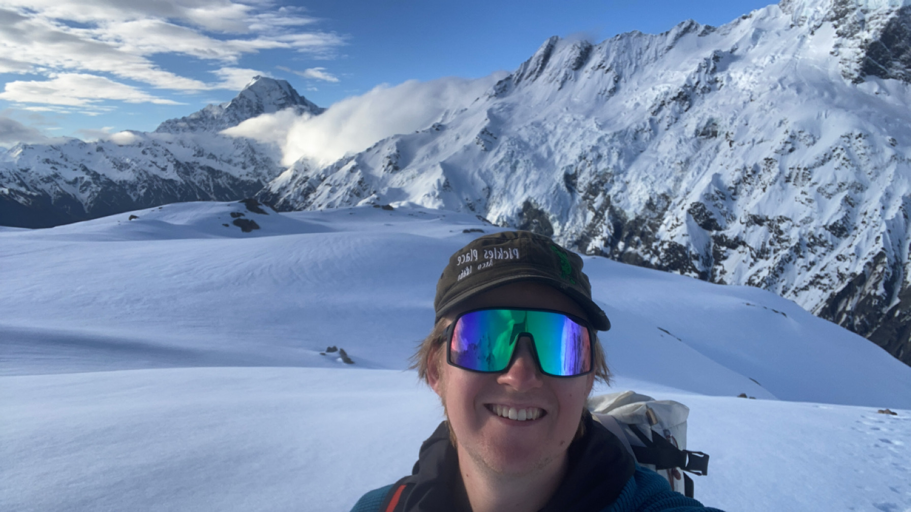

What I Do
I create maps and visual stories that make complex spatial data clear and compelling. My work spans trail guides, hachure relief maps, and data-driven cartography — blending technical precision with clean, modern design. I work primarily in QGIS and ArcGIS Pro for spatial analysis, and the Adobe Creative Cloud for design and finishing.
About Me

I’m Liam Reynolds, a Senior at Middlebury College double majoring in Geography and Earth and Climate Sciences. I’m really passionate about data, data visualization, spatial analysis, and cartography — over the past few years I’ve discovered a great joy in turning complex spatial data into clear, compelling maps and visuals. I also greatly enjoy doing graphic design.
I have a wide range of technical skills including hundreds of hours of experience in QGIS, ArcGIS, the Creative Cloud Suite, and R. I’m passionate about passing on my knowledge in these areas to others, as I love to see other people find joy in the things I love.
Outside of what I do for work I love spending time outside. I’m a lifelong hockey and ultimate frisbee player, and a passionate hiker and backcountry skier. I enjoy taking film photography when I’m outside, which you might see some of on this site!